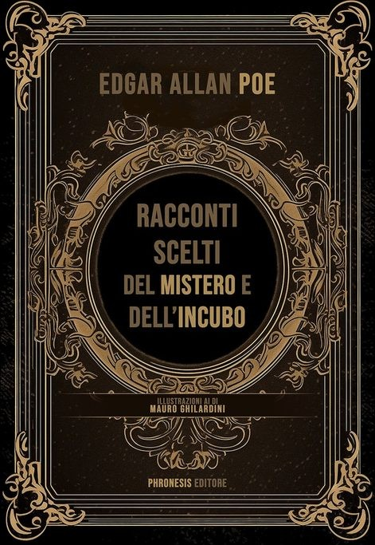
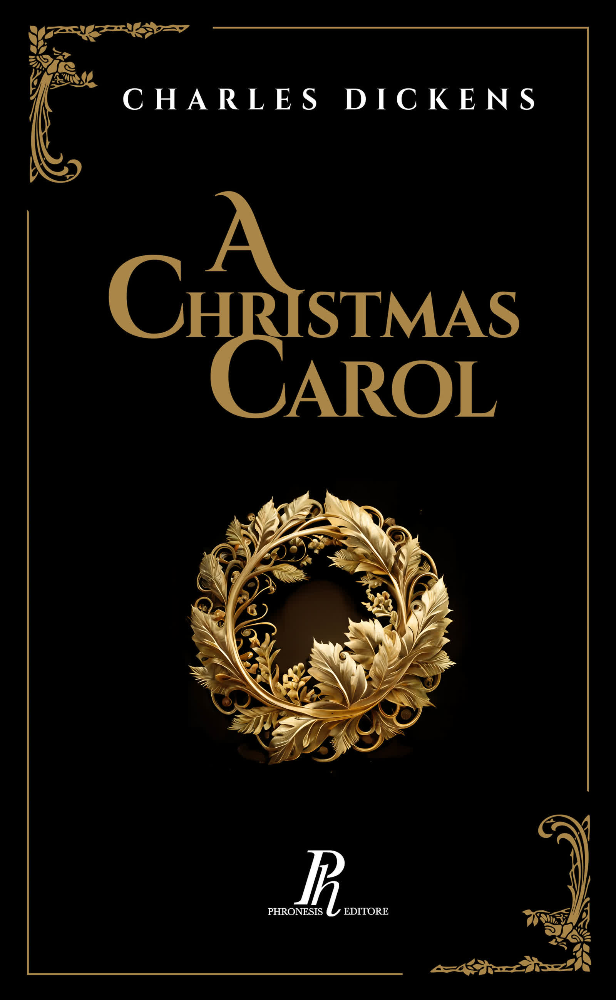
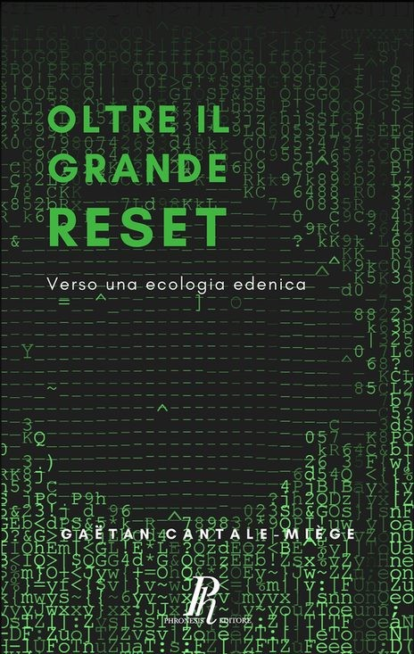
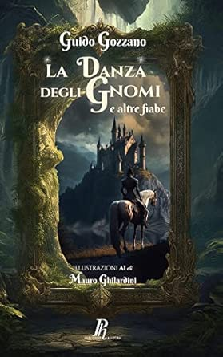
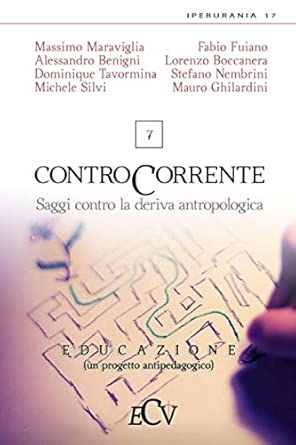
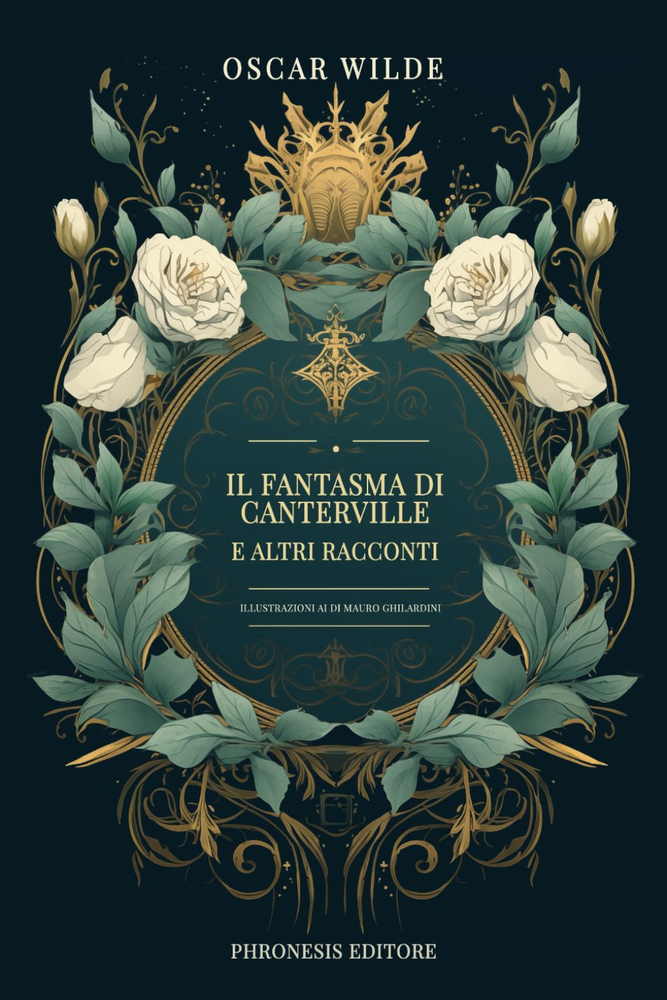

Studioso di metafisica e filosofia tomista. Traduttore, illustratore con AI, autore. Dal 2019 una serie di libri tra classici illustrati, teatro e saggistica. E prima ancora, gli articoli sui blog e i contributi accademici.






Due blog aperti in anni diversi: uno dedicato alla filosofia e alla teologia, l'altro alla critica musicale e lirica. I migliori articoli sono raggiungibili dai link qui sotto.
Contributi redatti durante lo studio con Fulvio Di Blasi al Thomas International Center. Filosofia antica, metafisica e tomismo.
Membro di giuria al Chiaroscuro Short Film Festival. Recensioni dei cortometraggi in concorso, edizioni 2024 e 2025.
Chiaroscuro Film Festival →